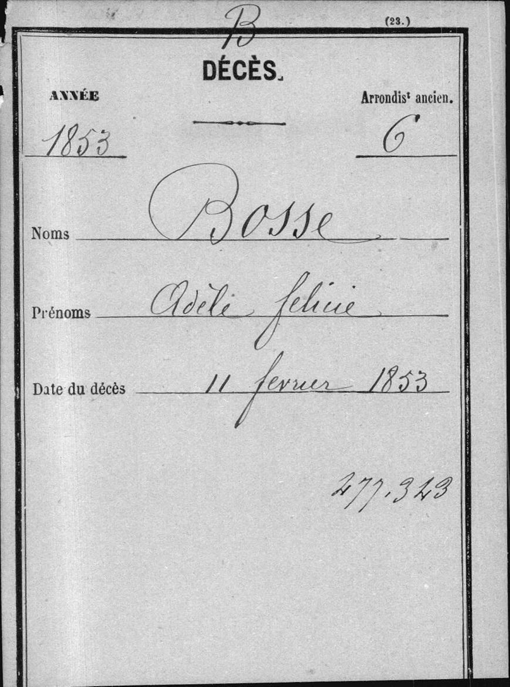

Dossier administratif · fichier
Fichier de l'état civil reconstitué, décès, V3E/D 156 « Bosse (1841) – Bosselet (1848) » : fiches Bosse 1849, 1853, 1859
Ce document établit
- Adèle Félicie Bosse, 28 ans, sans profession, née à Paris, épouse de Jean Louis Alexandre Rignault, musicien, est décédée à Paris, 6e arrondissement ancien, rue de Ménilmontant n° 17, le 11 février 1853. vérifié A0764
« « Bosse, Adèle Félicie — 1853 — 6 — 11 février 1853 » »
- Le fichier de l'état civil reconstitué contient une fiche de décès « Bossé, Hippolyte Félix », 9 juin 1849, 6e arrondissement ancien. partiellement vérifié A0767
« « DÉCÈS — ANNÉE 1849 — Arrondis¹ ancien 6 — Nom Bossé — Prénoms Hippolyte Félix — Date du décès 9 Juin 1849 » » (lecture incertaine : prénoms en lecture normale)
- Le fichier de l'état civil reconstitué contient une fiche de décès « Bosse, Félix Hippolyte », 21 novembre 1859, 8e arrondissement ancien. partiellement vérifié A0768
« « DÉCÈS — ANNÉE 1859 — Arrondis¹ ancien 8 — Nom Bosse — Prénoms Félix Hippolyte — Date du décès 2[1] novembre 1859 » » (lecture incertaine : jour « 2[1] »)
Ce document mentionne
- Le Félix Hippolyte Bosse décédé le 21/11/1859 (8e) est le père d'Adèle Félicie Bosse ; le décès de 1849 (Hippolyte Félix, 6e) serait alors celui d'une autre personne. non vérifié A0769
« fiches Bosse Félix Hippolyte 1859 (8e) et Bossé Hippolyte Félix 1849 (6e) »
Transcription
recherches/generation-5/rignault-lepinois/transcriptions.md (RL02)
Personnes concernées
Fiches d'index (nom, prénoms, date, arrondissement ancien) : aucun détail (âge, parents, profession).